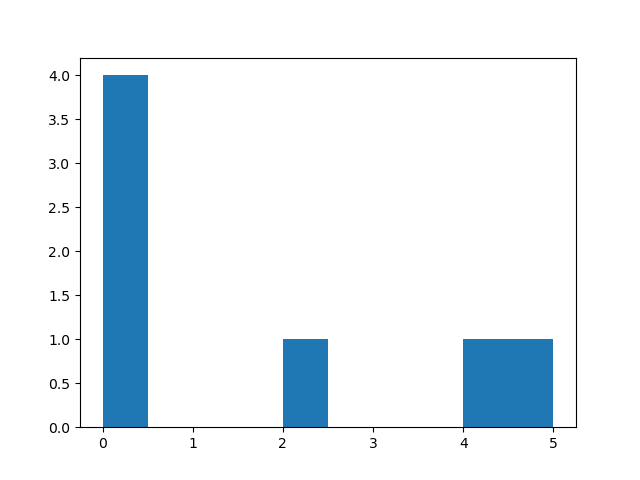

Fecha y hora actuales:
2025-04-02,21-57-32
Parametros de simulacion:
{'max_filas': 50, 'max_columnas': 100, 'cant_MO_inicial': 200, 'energia_inicial': 80, 'energia_max': 200, 'cant_max_alimento_ingerir': 20, 'energia_perdida': 1, 'cant_semb_inicial': 40, 'alimento_siembra': 50, 'epoca_rep': 5, 'prob_mutacion': 2, 'prob_cambio_semb': 5, 'prob_cambio_MO': 10, 'cant_max_alimento_celda': 50, 'invierno': 1}
Epoca:
126
Inteligencia:
[2, 0, 0, 2, 1, 3, 1, 1, 0, 1, 0, 3, 0, 1, 1, 3, 2, 2, 1, 2, 1, 3, 1, 1, 3, 1, 1, 3, 1, 2, 3, 0, 2, 0, 2, 4, 0, 1, 0, 2, 0, 0, 0, 1, 2, 3, 2, 3, 2, 1, 0, 2, 2, 0, 3, 1, 1, 1, 1, 1, 0, 1, 2, 2, 3, 2, 1, 1, 1, 1, 1, 1, 2, 2, 2, 0, 1, 3, 1, 2, 2, 1, 2, 0, 1, 3, 1, 1, 1, 2, 1, 1, 2, 1, 0, 1, 1, 0, 1, 2, 1, 2, 2, 1, 0, 0, 0, 1, 0, 0, 2, 1, 0, 0, 2, 1, 0, 0, 3, 3, 1, 0, 1, 1, 3, 1, 1, 2, 2, 3, 1, 1, 1, 0, 2, 3, 0, 1, 2, 1, 2, 2, 2, 0, 2, 3, 4, 0, 0, 3, 0, 2, 2, 1, 2, 1, 0, 0, 1, 1, 3, 1, 2, 2, 1, 1, 0, 1, 4, 2, 1, 0, 1, 1, 2, 1, 1, 2, 4, 0, 1, 2, 0, 0, 2, 3, 1, 2, 1, 0, 0, 2, 1, 1, 0, 1, 2, 0, 1, 1]
Inteligencia promedio:
1.305
Desviacion estandar:
1.005969681451683
Histograma con datos de la inteligencia de los microorganismos
